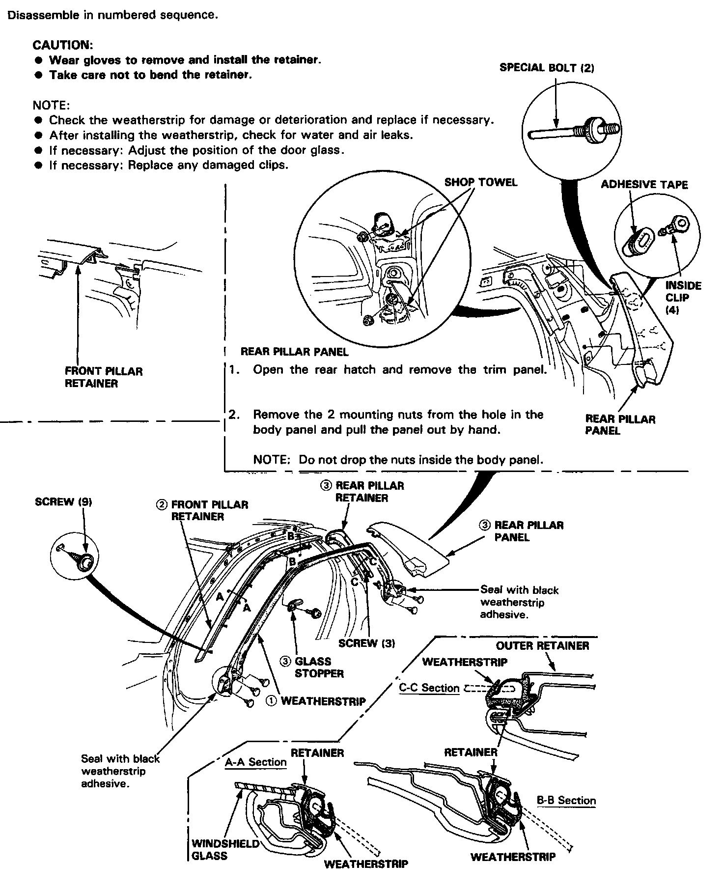

Operation CHARM
: Car repair manuals for everyone.
Home
>>
Acura
>>
1991
>>
NSX V6-3.0L DOHC
>>
Repair and Diagnosis
>>
Body and Frame
>>
Doors, Hood and Trunk
>>
Doors
>>
Front Door
>>
Front Door Window Glass
>>
Front Door Window Glass Weatherstrip
>>
Service and Repair
Front Door Window Glass Weatherstrip: Service and Repair
Side Window Molding/Weatherstrip:
